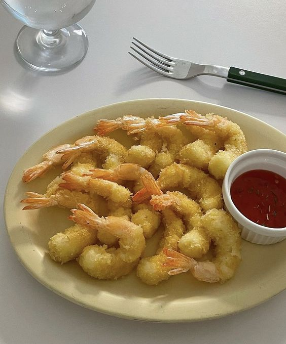

Tempura

Ingredients
Dough:
- jumbo or medium shrimp
- all-purpose flour
- cornstarch
- egg
- water (icy-cold)
Steps
- Boil the mafaldine pasta and salt water according to packaging instruction.
- Season your chicken breasts with spices.
- Pan fry each side for a few minutes.
- In that same pan, add minced garlic, butter, and flour to make a roux.
- After achieving a good color on the roux, add heavy cream, bouillon, parmesan cheese and mozzarella cheese.
- When the sauce thickens up, add the mafaldine pasta in the sauce and give it a nice toss around.
- Serve.